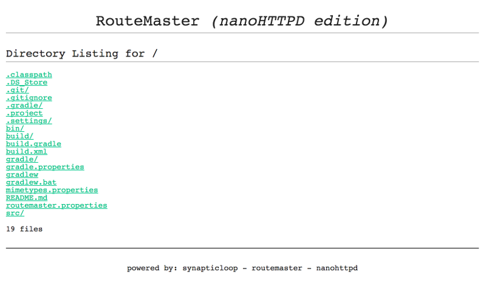

Static File List
When you just want a simple web server that allows you to browse all of the files from the current directory.
Setup
In the routemaster.properties file, simply add this line in:
route./*=synapticloop.nanohttpd.servant.StaticFileListingServantStart the server and you should see something along the following lines:
This is the simplest of ways to get a local webserver up and running.